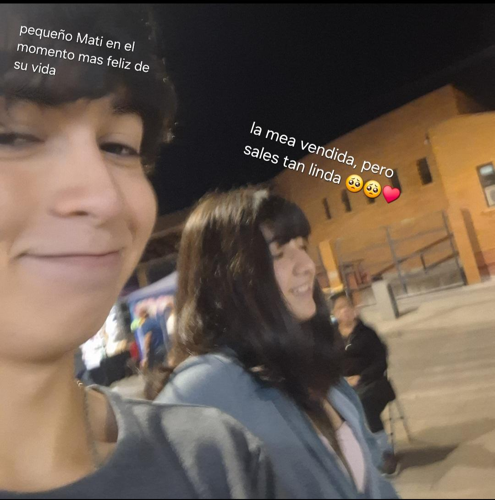

Ya ha pasado mucho tiempo desde que terminamos nuestra relación, pero sigo pensando en ti todos los días. Al despertar, miro mi teléfono esperando ver alguna señal tuya. Desde que lo nuestro terminó, vivo cada día con un vacío que no he podido llenar, por más que lo intente. ¿Y por qué? Quizás sea porque tú eres una persona muy importante en mi vida, puesto que en serio me importas y me cuesta aceptar que ya no estás aquí, y aun así te sigo amando todos los días un poquito más.
Tú tienes algo que me complementa y me hace más feliz, algo que solo tú tienes y que nadie más puede igualar. Aún te amo, y me ha costado mucho aceptarlo.
Cada vez que te veo caminar siento la necesidad de hablarte como antes, cuando éramos inseparables, pero no puedo. Me duele verte todos los días y no poder estar a tu lado para preguntarte ¿cómo estás? ¿que tienes a la proxima hora? ¿nos vamos a juntar despues?.
Si no fuera por ti, yo no hubiera hecho muchas cosas, como mejorar en la música o “intentar” subir mis notas. Si no fuera por ti, no hubiera podido vivir momentos tan lindos como los que pasé contigo. Todo lo que hice fue por ti y para hacerte feliz, porque si tu eres feliz yo tambien lo sere.
Quiero verte. Todos los días tengo ese pensamiento, y no sé si tú también me piensas, si es que a veces esperas por un mensaje mío o si te has desvelado pensando en mí. En verdad quiero pensar que tú me estás esperando para volver, aunque sea vergonzoso al principio. Yo estoy dispuesto a intentarlo y volver a lo de antes, a cuando llegaba con tantas ganas al liceo tan solo para verte y estar a tu lado y pasear contigo por todo el liceo y contarnos cosas bien exoticas jskasdj.
Probablemente leas esto en una cartita y no en esta página, puesto que una cartita es más bonita según yo. Pero si llegaras a ver esta bonita página que hice con amor, espero que le dediques tiempo en ver todas las cositas lindas que puse para tí.
Dicen que “si amas, debes dejar ir”, pero eso no va conmigo. Para mí, el mayor acto de amor jamás sería dejar ir, sino luchar por quien quiero que sea el amor de mi vida, porque amar jamás sería soltar y dejar ir así, solamente sin luchar. Quizás tuviste que dejar lo nuestro para descubrir que no hay nada mejor y que mi amor por ti en serio es verdadero. Y sí, me equivoqué muchas veces durante todo este tiempo, hice cosas sin pensar en las consecuencias, pero gracias a todo eso estoy seguro de que no hay nada mejor que tú y que todo cambió justo cuando te vi por primera vez.
Realmente espero que regreses a mí, aunque esto no llegue a ti, y sí, esperaré a que tú me busques y que quizás vuelvas la próxima vez que vea tu perfil o tus historias.
Y si por todo esto me tienen que decir migajero, me lo merezco completamente. Porque, ¿cómo uno se gana el título de migajero? ¿Cuando uno ruega por amor o cuando empieza a amar con todo el corazón?
Siempre pensé en la posibilidad de que no quisieras volver. Y sí, esa noche en la que recibí esa carta la pasé muy mal. Pensaba en si no fui suficiente o si ya no me amabas. Quiero que sepas que no debes pedirme perdón por haberme hecho sentir mal, porque por ahí dicen que “lo mejor viene después de que algo malo pasa”.
Tengo miedo de que no quieras volver a intentarlo, de que no volvamos a ser lo de antes. Ya no sé qué intentar para hacer que entiendas lo que siento. Quizás no te lo pueda expresar con cartas o páginas; jamás podrías entender el amor y cariño que te tengo. Y sé que siempre volveré a ti, pase lo que pase, puesto que mi corazón está acostumbrado a oír tu voz y a tenerte cerca.
Mi madre te extraña; siempre se acuerda de ti, de lo tierna que eras y de lo feliz que me hacías. Yo también te extraño demasiado y me gustaría poder estar a tu lado una vez más, poder estar junto a ti en tus momentos difíciles y también en los momentos en los que estés llena de felicidad.
Extraño las locuras que hacian tus amigas tambien, las cagas q se mandaban aveces, pero seguro lo extaño porque tu estabas ahi, me acuerdo cuando le pusieron un condon a un palo ._. kajdkasjd, otro lindo recuerdo que tengo es cuando te tenias q ganar en la ceramica de la pérgola para poder estar a mi estatura era tan tierno como te ponias, o tambien cuando compramos las mismas pulseras, tambien creo que nunca te dije que nunca me habian dado flores antes de conocerte y tu fuiste la primera en darme una, y mas encima con un "que lindo papu" que más puedo pedir si tu eres perfecta en todo sentido ante mis ojos.
Ya no sé qué hacer, pues he pensado tanto en ti: en qué estás haciendo, en si pensarás en mí, incluso en si ya te harté y solamente te quieres alejar de mí.
Quizás solo estoy sobrepensando las cosas, como todas las noches, ya que como a las 3 o 4 de la mañana me sale lo “migajero”. Quiero volver a intentarlo, aunque sea vergonzoso al principio. Con paciencia y con amor resultarán las cosas, y de a poquito volveremos a tener lo que teníamos antes, incluso mejor, ya que estamos más grandes los dos jskajskj. Sé que si tú estás dispuesta a volver a intentarlo, todo saldrá bien. Te conozco y sé bien que tú eres el amor de mi vida, mi bizcochito.
